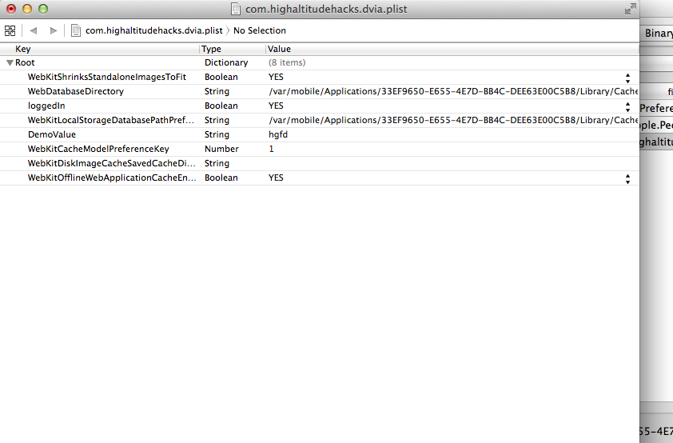

In this article, we will look at another cool utility named iDB for pentesting iOS applications.
Before that, i would like to apologize for coming up late with this article. A lot of you have been requesting articles on different topics and i promise that i will write on them soon :). So since we are best friends again, let’s dive into this tool.
iDB is open source and you can download it from its Github page. You can then follow the tutorial here to know how to install it. Installation might take some time as there might be some dependencies you will have to install, so have some patience. Also, please note that it works with ruby versions 1.9 and 2.1 so make sure you set that version of ruby. You can use rvm list to list the versions of ruby installed on your system and then use rvm usefollowed by the version of ruby that you want to use.
Once you are done installing iDB, browser to its root directory and open it using the command ruby gidb.rb.
This will launch iDB.
Before you start using iDB, you must set up the connection settings. Go to Ruby -> Preferences.
Now under the Device Config tab, select either SSH directly or SSH over USB which uses usbmuxd internally. I prefer the latter one. Provide your username and password and the port number over which SSH is running.
Under the port forwarding section, you can set options for port forwarding if you want. This is generally done by the syntax remote:8080 -> localhost:8080 which is quite self explanatory. Here, we are not going to set any port forwarding as we really don’t need it for this tutorial, but we must set the option Port for Manual SSH which will be used by usbmuxd. What this will do is forward all the connections sent to port 2222 on localhost to the device on port 22 over USB.

So basically, you can now just SSH to localhost on port 2222 and it will connect you to your device.
Now make sure your device is connected to your system over USB. Go to Devices and select the option USB Device to connect to your device.
One of the unique functionalities of iDB is that it allows you to connect to iOS simulators as well. I have tried it and it works quite well. This is specially helpful for iOS developers who use Xcode and want to audit their apps quite frequently. I would like you to check that feature out as well.
As soon as iDB connects to your device, it will do a quick analysis and tell you what apps that it needs are already installed on your device and which one needs to be installed. You can just click on install next to the tool to install it. Make sure you install each of the required dependencies. In some cases you might feel that the application is already installed. Well, iDB checks for files in specific locations, for e.g /usr/bin, so it might not be able to detect it always. Its better just to reinstall the tool in case iDB is not able to detect it.
Once you have installed all the apps, click on Select App on the top left and select the application that you want to audit. In this case, i am going to select Damn Vulnerable iOS application
Next, click on Launch App to launch your app on the device.
On the left hand side, you can click on Analyze Binary to see whether certain security features like Encryption, PIE etc have been enabled in the app or not. Since i have installed this app manually on a jailbroken device, there is no encryption.
So let’s go through each feature one by one. On the Storage tab, you can see all the files DVIA is writing to or has already written to along with their data protection levels. In case it doesn’t show up, click Refresh.
The URL Handlers tab tells you which URL schemes the app registers to. You can then call any url starting with that url scheme to see how the app reacts to it.
The binary tab will show you all the Shared libraries the app is using, class information using Weak Class Dump and all the strings it could find in the binary.

The filesystem tab can be used to see all the files in the application sandbox folder along with their permisions. If you want to see the contents of any file, just double click on it.

The Tools section will allow you to see the cached screenshot that is stored on the device whenever the application goes to the background.
And you can also install the Burp CA certificate that is used for analyzing SSL connections directly on your device or simulator. For device, it will simply open the url http://burp (Make sure proxy is set on your device). This is again quite a useful feature and saves you a lot of time. You can also edit the hosts file on your system in case you want to redirect the request for a particular ip or hostname to some other location.
The Log tab shows you the device logs. It can be used to test scenarios when the application is logging sensitive information to the console.
The keychain tab will dump all the keychain information stored using this application using the keychain dumper utility.
The pasteboard tab will analyze the pasteboard buffer to see if there is some sensitive information stored in the buffer. As you can see, here it finds a string named secret123stored in the pasteboard buffer.
Overall, iDB is a great tool for iOS pentesting and helps us save a lot of time by doing most of the tasks with just one click. There are other features as well such as integration with Cycript and Snoop-it, but they are still in the development phase. I would recommend that you clone the repository from github if you want to check those features out.